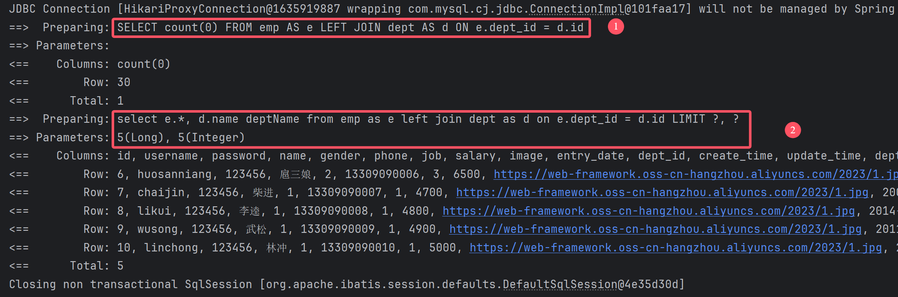
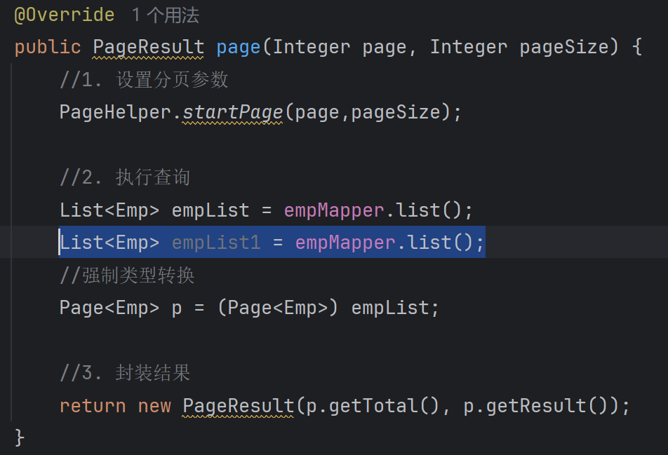

[SpringBoot]PageHelper插件
PageHelper是第三方提供的Mybatis框架中的一款功能强大、方便易用的分页插件，支持任何形式的单标、多表的分页查询。
官网：https://pagehelper.github.io/
依赖
XML
<!--分页插件PageHelper-->
<dependency>
<groupId>com.github.pagehelper</groupId>
<artifactId>pagehelper-spring-boot-starter</artifactId>
<version>1.4.7</version>
</dependency>
无插件下的分页查询操作
Service层
Java
@Override
//参数：
//-page 要查询的页数
//-pageSize 每页的数据数
public pageResult<Emp> page(Integer page, Integer pageSize) {
Long count = empMapper.count(); //调用Mapper层的方法获取总数据数
List<Emp> list = empMapper.list((page - 1) * pageSize, pageSize);
//调用Mapper层的方法调用当前页的数据列表
return new pageResult<Emp>(count, list);
//返回给Controller层一个实体类
}
Mapper层
Java
//查询数据总数
@Select("select count(*) from emp e left join dept d on e.dept_id = d.id")
public Long count();
//分页查询
@Select("select e.* , d.name deptName " +
"from emp e left join dept d on e.dept_id = d.id " +
"order by e.update_time desc " +
"limit #{start}, #{pageSize}")
public List<Emp> list(Integer start, Integer pageSize);
PageHelper插件优化
Service层
Java
@Override
public PageResult page(Integer page, Integer pageSize) {
//1. 设置分页参数
PageHelper.startPage(page,pageSize);
//2. 执行查询
List<Emp> empList = empMapper.list();
//强制类型转换
Page<Emp> p = (Page<Emp>) empList;
//3. 封装结果
return new PageResult(p.getTotal(), p.getResult());
}
Mapper层
Java
@Select("select e.*, d.name deptName " +
"from emp as e left join dept as d on e.dept_id = d.id")
public List<Emp> list();
实现原理
引用PageHelper插件后只需在Mapper层声明一个查询所需属性的SELECT语句即可，在运行时，该插件会自动注入SQL语句
- 第一条SQL语句，用来查询总记录数
将查询返回的字段列表替换成了 count(0) 来统计总记录数。
- 第二条SQL语句，用来进行分页查询
查询指定页码对应 的数据列表。在SQL语句之后拼接上了limit进行分页查询

PageHelper在进行分页查询时，会执行上述图片中两条SQL语句，并将查询到的总记录数，与数据列表封装到了 Page<Emp> 对象中，我们再获取查询结果时，只需要调用Page对象的方法就可以获取。
注意事项
-
PageHelper实现分页查询时，SQL语句的结尾一定一定一定不要加分号(;).。
-
PageHelper只会对紧跟在其后的第一条SQL语句进行分页处理。
若在Service方法中多写一条SQL语句 则会原样输出

因为调用的Mapper层中的SQL语句原本是查整个表的数据 所以第二个查询操作只会原样输出整个表的数据
← Home
👁 ... 次阅读